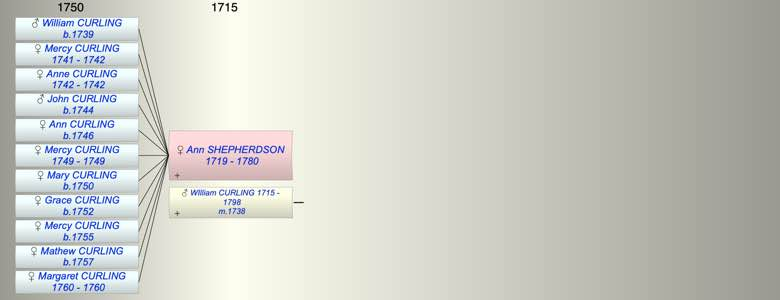

| [Index] |
| Ann SHEPHERDSON (1719 - 1780) |
|  |
| b. 1719 at St Laurence |
| m. 09 Nov 1738 WIlliam CURLING (1715 - 1798) at Canterbury Cathedral |
| d. 01 Jul 1780 at St Laurence aged 61 |
| Events in Ann SHEPHERDSON (1719 - 1780)'s life | |||||
| Date | Age | Event | Place | Notes | Src |
| 1719 | Ann SHEPHERDSON was born | St Laurence | Note 1 | ||
| 09 Nov 1738 | 19 | Married WIlliam CURLING (aged 23) | Canterbury Cathedral | Note 2 | |
| 1739 | 20 | Birth of son William CURLING | St Laurence | Note 3 | |
| 1741 | 22 | Birth of daughter Mercy CURLING | St Laurence | Note 4 | |
| 1742 | 23 | Birth of daughter Anne CURLING | St Laurence | Note 5 | |
| 1742 | 23 | Death of daughter Mercy CURLING (aged 1) | St Laurence | burial 30 Jan 1742 ex FS | |
| 1742 | 23 | Death of daughter Anne CURLING | St Laurence | Note 6 | |
| 1744 | 25 | Birth of son John CURLING | St Laurence | Note 7 | |
| 1746 | 27 | Birth of daughter Ann CURLING | St Laurence | Note 8 | |
| 1749 | 30 | Birth of daughter Mercy CURLING | St Laurence | Note 9 | |
| 1749 | 30 | Death of daughter Mercy CURLING | St Laurence | Note 10 | |
| 1750 | 31 | Birth of daughter Mary CURLING | St Laurence | Note 11 | |
| 1752 | 33 | Birth of daughter Grace CURLING | St Laurence | Note 12 | |
| 1755 | 36 | Birth of daughter Mercy CURLING | St Laurence | Note 13 | |
| 1757 | 38 | Birth of daughter Mathew CURLING | St Laurence | Note 14 | |
| 1760 | 41 | Birth of daughter Margaret CURLING | St Laurence | Note 15 | |
| 1760 | 41 | Death of daughter Margaret CURLING | St Laurence | Note 16 | |
| 01 Jul 1780 | 61 | Ann SHEPHERDSON died | St Laurence | aged 61 ex MI | |
| Personal Notes: |
| Her paretns William Shepherdson and Ann Holman married at St Laurence 24 Oct 1714 ex FS. |
| Created on a Mac™ using iFamily for Mac™ on 8 Oct 2023 |